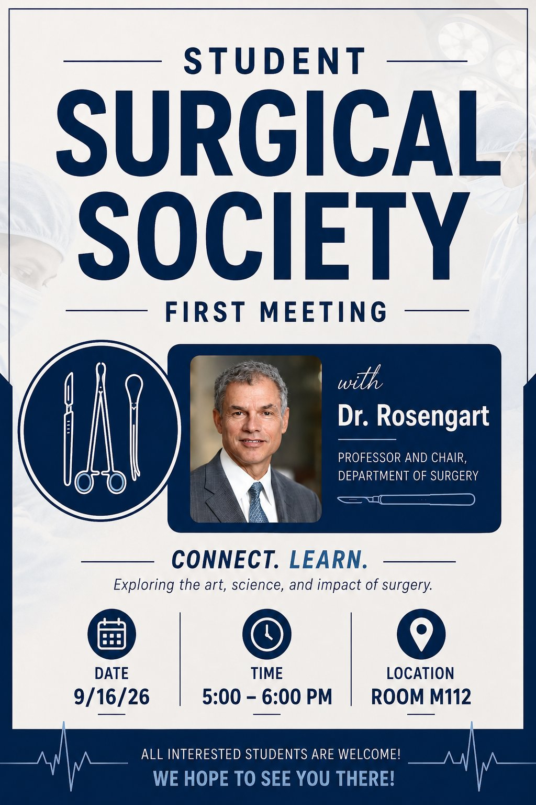

Student Surgical Society: First Meeting with Dr. Rosengart
RSVP closed Sep 14
Interest group
When
Wednesday, September 16 · 5 PM – 6 PM
Where
Room M112 Map
Host
Student Surgical Society (SSS) · posted in BCM '30
Details
Talk by Dr. Todd Rosengart, Professor and Chair of the Michael E. DeBakey Department of Surgery, on surgical training and practice. Dress nicely (no sweatpants).
RSVP
Deadline passed · was Mon Sep 14, 11:59 PM
· form
RSVP was due Monday, Sept 14. A Teams link goes only to Temple campus students who RSVP'd.
Announcement
BCM '30 · Aug 27
Hi all, the Student Surgical Society will hold its first meeting of the year on Wednesday, September 16, from 5 to 6 PM in M112. Our guest is Dr. Todd Rosengart, Professor and Chair of the Michael E. DeBakey Department of Surgery. This is a fantastic chance to meet the Chair and hear his perspective on surgical training and practice, particularly for anyone considering a surgical career.
Please dress nicely (no sweatpants, etc)!
Please RSVP by Monday, September 14 at the link below. There will be a teams link sent to TEMPLE campus only for those who RSVP. Hope to see you there :)
https://forms.gle/fbGGNUMHemYkGLgk9